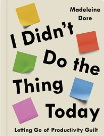

Book Notes

I Didn't Do the Thing Today
Madeleine Dore · 2021
On letting go of productivity guilt. Dore interviewed hundreds of writers, artists, and thinkers about how they structure their days — and found that no one does it the way they thought they should.
Passages I underlined and quotes that stuck. In the order I encountered them.
Productivity & Worthiness
"When we conflate productivity with worthiness, what we do is never enough." — p. 4
"When we don't meet the high standard of productivity we set for ourselves, we feel bad — overlooking the fact that the benchmark was out of reach to begin with." — p. 7
Comparison
"The minutiae of our daily lives differ for each of us, yet we often compare ourselves with others." — p. 13
"Through our screens, we have a front-row seat to the burgeoning careers, declarations of love, and fancy-free getaways of countless strangers." — p. 126
"I've found that being curious about the people we are comparing ourselves with is one of the greatest salves to comparison." — p. 130
Routines & Rhythms
"Instead of having a set routine from which they will inevitably slip, the day artist finds rhythms." — p. 25
"We glorify routines, but we tend to judge being in a rut." — p. 37
"Instead of overindexing on the adherence to rules, delightful discipline can take a 'most days' approach, where we commit to the practice or skill over the long haul, stay attuned to our energy levels, and remember to start again tomorrow if we need to." — p. 205
Time & Memory
"The greater number of new memories we create, the longer an experience — a day — will seem in hindsight." — p. 54
"When we worry about wasting time, we end up wasting our time worrying." — p. 61
"On most days, three to four hours of high-quality, focused mental work is about our maximum." — p. 64
"It's easy to be judgemental about how long a thing takes. We label the space between an idea and action as laziness, procrastination, or wasting time when, more often than not, we're simply not ready yet." — p. 66
Balance & Decisions
"Maybe oscillating between abstaining and indulgence can be our version of balance. We often try to dilute intensity or excess with moderation, but great things can come from being someone who swings to different sides of the pendulum." — p. 100
"What gives meaning or a sense of fulfillment to one person's day might be completely overlooked by another." — p. 106
"The Latin root of the verb decide literally means 'to cut off' — and in the metaphorical sense 'to kill'." — p. 110
"What might be preventing us from being content with our choices is something author and entrepreneur Patrick McGinnis named 'FOBO' — fear of better options — which leads to stress, dissatisfaction, and even regret over our decision. FOBO is an 'affliction of affluence.'" — p. 113
Attention & Distraction
"Often it's our doubts, fears, our boredoms, our regrets, or our guilt that pushes us toward external distractions — our phones, our email, our unopened tabs, our sudden desire to see what our high-school nemesis is up to now. It's far easier to scroll through the endless reels than it is to sit with our own boredom, loneliness, anxiety, or dread." — p. 222
"It's the gradual, slight, imperceptible change in your own behavior and perception that is the product." — p. 223
"Our nerves may well be in a state of unwholesome disrepair, not only from the constant bombardment of contradicting and polarizing news, but also from an endless stream of updates from friends, foes, and strangers. We blame ourselves for not keeping up, but perhaps we're just not meant to be aware of what thousands of people are doing or thinking." — p. 228
"It is this reclaiming of our choice in what we pay attention to that reconnects us with ourselves and our sense of agency." — p. 230
Interest & Happiness
"Interest begets interest — when you become interested in things, more things become interesting to you." — p. 270
"By studying human happiness, she found it's not the big things like money and success that make us happy, but rather the simple, small things." — p. 275